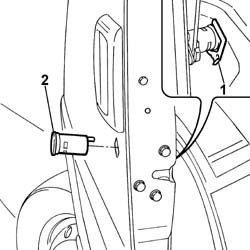

7005C34 FRONT SIDE DOOR LOCK BARREL - R R WITH DOOR PANEL REMOVED
- Path
- Procedures > 70 FITTINGS > 7005 PASSENGER COMPARTMENT FRONT SIDE DOORS > 7005C FRONT LOCK CONTROLS > 7005C34 FRONT SIDE DOOR LOCK BARREL - R R WITH DOOR PANEL REMOVED
- Kind
- repair procedure (removal / refitting; the operation number is the code)
- Applies to
- all engines; all production periods
- Interactive page
- https://sloeber94.github.io/elrnDB-fDct/en/#/244001429
Applies to: all engines; all production periods
 Removing
Removing
 Refitting
Refitting- Disconnect the negative battery terminal.
1. Remove the spring securing the lock barrel.
2. Remove the lock barrel.

Applies to: all engines; all production periods
Refitting
Removing- Fit the lock barrel in the special housing in the door and in the lock.
- Fasten the lock barrel to the door, securing it with the retaining spring.
- Connect the negative battery terminal.